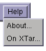

This menu allows you to access copyright and help information.

The About... menu option displays a box summarising the current version of XTar and author and copyright information. The On XTar... option opens the hypertext help system and displays these pages!
Go back to the index or on to the Statistics Viewer.